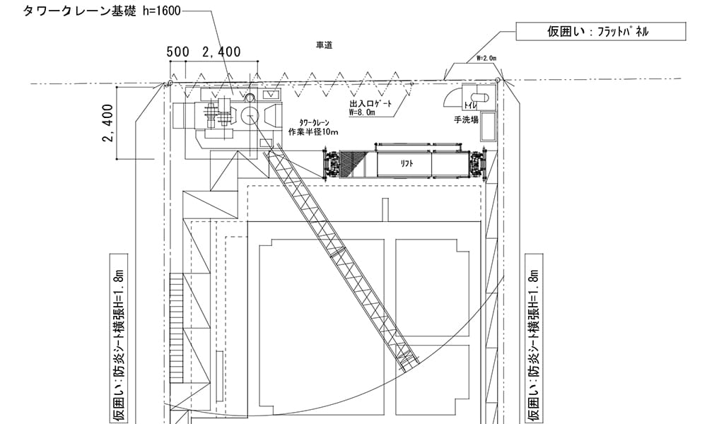
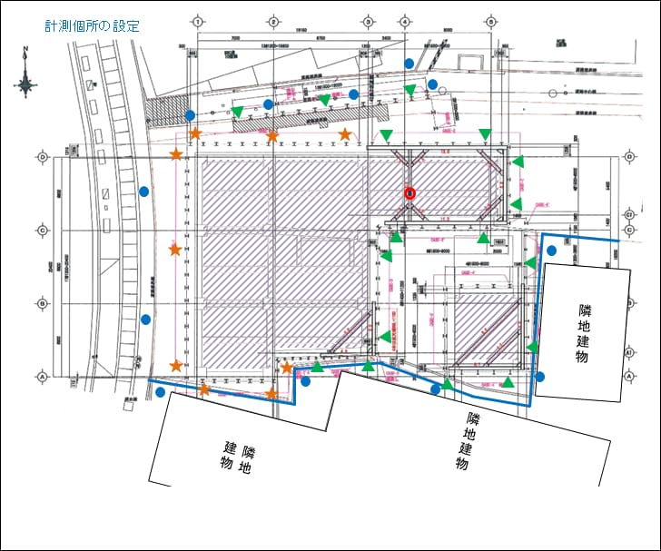
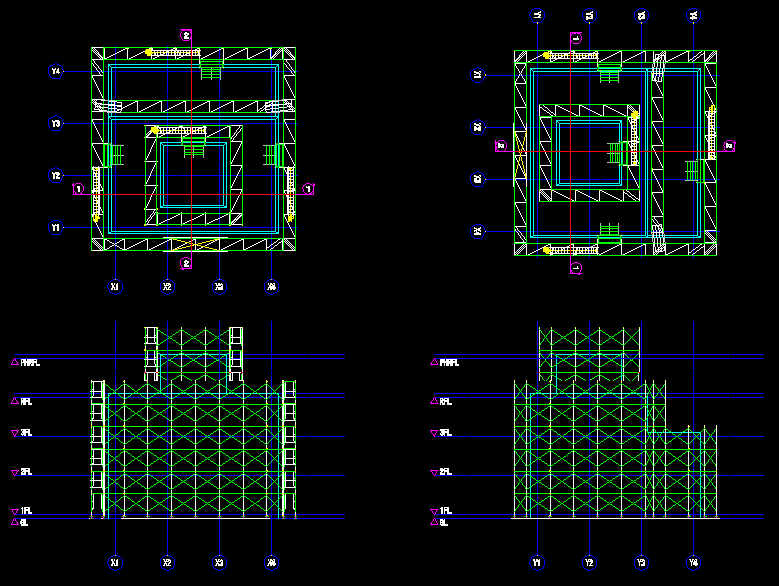
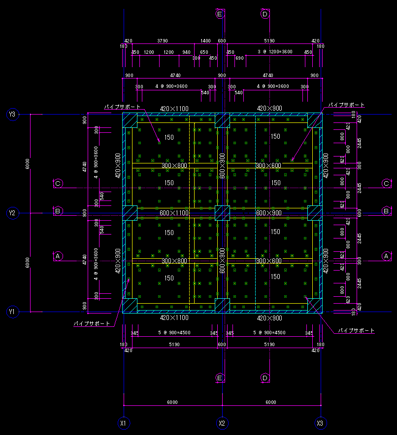
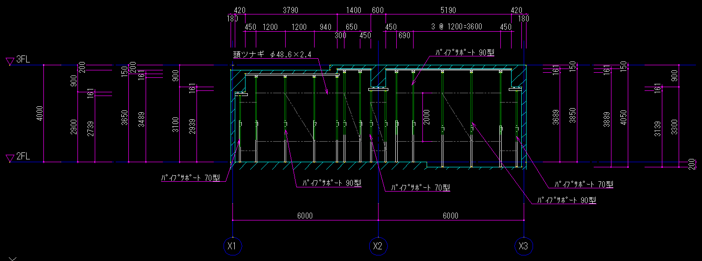
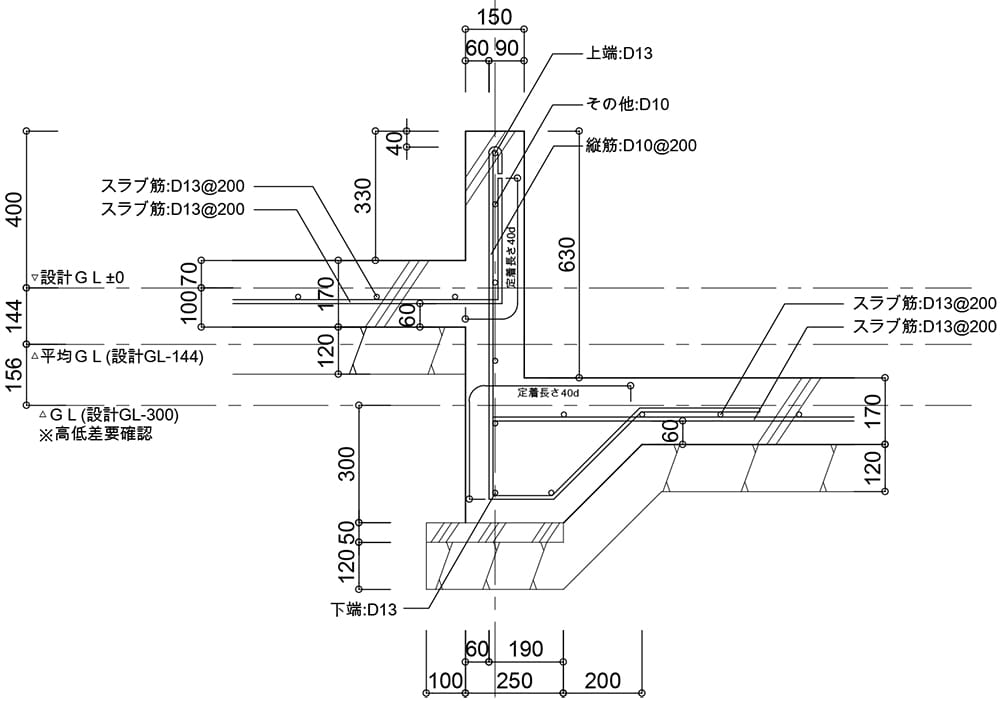
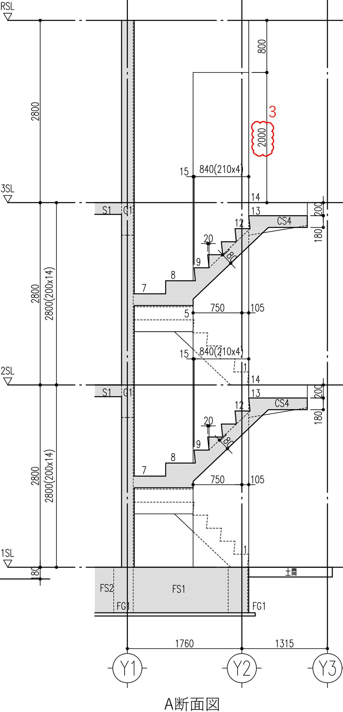

はじめに / Introduction
このテキストは、日本の建築現場で働く技術者のために作成されました。第1章で学んだ基礎を元に、より実践的な「躯体（くたい）」と「仕上げ（しあげ）」の図面について詳しく学びます。
This textbook is designed for engineers working at Japanese construction sites. Based on the basics learned in
Chapter 1, we will study practical "Structure (Kutai)" and "Finishing (Shiage)" drawings in detail.
第2章: 躯体施工図の詳細 Chapter 2: Details of Structural Construction Drawings
2-1. 鉄筋加工図（配筋図） Reinforcement Bar Fabrication & Arrangement Drawings
MEP (Mechanical, Electrical, and Plumbing) working drawings show precise locations, routing, and dimensions of
equipment based on design drawings. They are crucial for checking interferences with architectural and
structural elements.
第6章: 仮設計画図と躯体図の詳細解説 Detailed Explanation of Temporary Works Plans and Structural Drawings
6-1. 仮設計画図の役割 / Role of Temporary Works Plans
仮設計画図は、建物を建設するために一時的に必要となる設備や構造物を示す図面です。建物完成後には撤去されますが、工事の安全、品質、工程を守るために極めて重要です。
Temporary works plans show temporary facilities and structures required to construct the building. Although
removed after completion, they are crucial for safety, quality, and schedule.
6-2. 総合仮設計画図 / Site Temporary Works Plan
工事期間中の敷地全体の利用計画を示します。仮囲い、ゲート、現場事務所、資材置き場、クレーンの配置などを記載します。
Shows the utilization plan for the entire site during the construction period. Includes site enclosure, gates,
site office, material storage, and crane positioning.
ポイント / Point:
動線計画（Traffic Line Plan）が重要です。車両と作業員の動線を分け、安全で効率的な配置を検討します。
Traffic line planning is important. Separate vehicle and worker paths to ensure safety and efficiency.
図6-2: 総合仮設計画図（平面図・断面図） / Site Temporary Works Plan

出典: 総合仮設計画図の実例
6-3. 根切・山留計画図 / Excavation and Earth Retaining Plan
地下部分を作るために土を掘る（根切）範囲と、周囲の土が崩れないように支える壁（山留）の計画図です。
Plan for excavating soil (Negiri) to construct underground parts and the retaining wall (Yamadome) to prevent
surrounding soil collapse.
図6-3: 根切・山留計画図 / Excavation and Earth Retaining Plan

出典: 根切・山留計画図の実例
6-4. 外部足場計画図 / Scaffolding Plan
建物の外周に設置する作業用足場の計画図です。安全な作業通路の確保、落下防止ネット（朝顔）の設置などが描かれます。
Plan for working scaffolding installed around the building perimeter. Ensures safe walkways and includes fall
prevention nets (Asagao).
図6-4: 足場架設通路計画図 / Scaffolding Plan

出典: 足場計画図の実例（立面図）
6-5. 型枠支保工計画図 / Formwork Support Plan
コンクリートを流し込む型枠を支えるための支柱（サポート）や梁（大引き・根太）の配置図です。コンクリートの重量に耐えられるよう計算して配置します。
Layout plan of props (supports) and beams (sleepers/joists) to support formwork for pouring concrete. Arranged
based on calculations to withstand concrete weight.
図6-5: 型枠支保工計画図（貸店舗）/ Formwork Support Plan

出典: 型枠支保工計画図の実例
図6-6: 型枠支保工計画図（階段最上階スラブ）/ Formwork Support Plan (Stair)

出典: 型枠支保工計画図の実例（階段部分）
6-7. 躯体図の詳細解説 / Detailed Structural Drawings
躯体図は、建物の骨組み（コンクリートの壁、柱、床、梁）の形状と寸法を正確に示す図面です。
Structural drawings accurately show the shape and dimensions of the building frame (concrete walls, columns,
floors, beams).
図6-7: 杭・基礎伏図および断面図 / Pile & Foundation Plan

出典: 基礎伏図・配筋図の実例
図6-8: 階段躯体詳細図 / Stair Structure Detail

出典: 階段躯体図の実例
第7章: CADによる施工図作成実践 Practice of Creating Construction Drawings with CAD
7-1. 施工図で使われるCADソフト / CAD Software for Construction Drawings
日本の建築現場では主に以下のCADソフトが使用されます。
The following CAD software is mainly used in Japanese construction sites.
AutoCAD: 世界標準。多くのゼネコンで使用。
Jw_cad: 日本独自の無料ソフト。中小規模現場で人気。
Revit / ArchiCAD: BIM対応ソフト。近年増加中。
7-3. 施工図作成の実践手順 / Practical Steps for Drawing Creation
CADを使った躯体図作成の基本的な流れです。
Basic flow of creating structural drawings using CAD.
設計図の読み込み: 通り芯、柱、梁の基本情報を確認。
通り芯の作図: 正確な位置に配置。
コンクリートラインの作図: 柱・壁・梁の線を描く（太線）。
寸法線の記入: 通り芯からの追い出し寸法を記入。
符号の記入: 柱（C1）、梁（G1）、スラブ（S1）などの符号を記入。
図7-1: CADによる躯体図作成例 / CAD Drawing Example
出典: WRC造躯体図の実例（CAD作成）
第8章: 実際の現場事例 Actual Site Cases and Troubleshooting
8-1. トラブル事例と対策 / Trouble Cases and Countermeasures
事例: 設備配管と梁の干渉 / Case: Interference between piping and beams
設計図では梁を貫通する予定だった配管が、実際には梁の鉄筋と干渉して通せないことが判明。
It was found that piping scheduled to penetrate the beam in the design drawing actually interfered with the beam
reinforcement.
対策 / Countermeasure:
施工図作成段階（総合図）で、スリーブ位置と鉄筋位置を重ね合わせてチェックする。
Check sleeve positions against reinforcement positions during the construction drawing phase (Composite
Drawing).
8-4. 現場でのコミュニケーション / Communication on Site
施工図は「現場の共通言語」です。図面を使って職人さんや他業者と正確に情報を共有しましょう。
Construction drawings are the "common language of the site." Use drawings to share information accurately with
craftsmen and other contractors.
これまでの全8章を通じて、建築施工図の基本から応用、実践的なトラブル対策までを学びました。施工図は建物の品質を左右する重要な仕事です。正確な図面を描き、現場をスムーズに進めるプロフェッショナルを目指してください。
Through all 8 chapters, we have learned from the basics to applications and practical troubleshooting of
construction drawings. Construction drawings determine the quality of the building. Aim to be a professional who
draws accurate plans and facilitates smooth site operations.